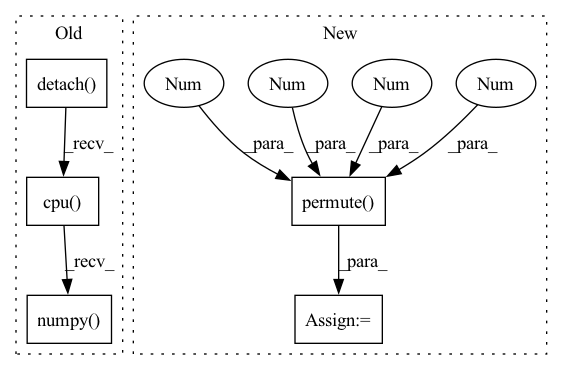

Pattern ID :9815
Before Change
for data in test_loader:
x = data[0].squeeze(0).squeeze(0).detach().cpu().numpy()
y = data[1].squeeze(0).squeeze(0).detach().cpu().numpy()
x_seg = data[2].squeeze(0).squeeze(0).detach().cpu().numpy()
y_seg = data[3].squeeze(0).squeeze(0).detach().cpu().numpy()
x = ants.from_numpy(x)
y = ants.from_numpy(y)
After Change
x_seg_oh = nn.functional.one_hot(x_seg.long(), num_classes=46)
x_seg_oh = torch.squeeze(x_seg_oh, 1)
x_seg_oh = x_seg_oh.permute(0 , 4 , 1, 2 , 3 ) .contiguous()
x_seg_oh = x_seg_oh.squeeze(0).detach().cpu().numpy()
y_seg = data[3].squeeze(0).squeeze(0).detach().cpu().numpy()
In pattern: SUPERPATTERN
Frequency: 3
Non-data size: 5
Instances Fragment ID: 35247129
Project Name: junyuchen245/transmorph_transformer_for_medical_image_registration
Commit Name: 0612d1a704653ff98a92a228ecaefd2023577062
Time: 2022-09-07
Author: jchen245@jhmi.edu
File Name: IXI/Baseline_traditional_methods/SyN/infer_IXI.py
M Class Name: AnonimousClass
N Class Name: AnonimousClass
M Method Name: main(0)
N Method Name: main(0)
M Parent Class:
N Parent Class:
M File Name: IXI/Baseline_traditional_methods/SyN/infer_IXI.py
N File Name: IXI/Baseline_traditional_methods/SyN/infer_IXI.py
M Start Line: 57
M End Line: 86
N Start Line: 58
N End Line: 96
Before Change
device = layer._modules["_module_to_wrap"].bias.device
use_cuda = utils.is_model_on_gpu(layer)
quant_dequant_weight = get_quantized_dequantized_weight(layer, use_cuda).detach().cpu().numpy()
weight_tensor = layer._modules["_module_to_wrap"].weight
weight_tensor = weight_tensor.detach().cpu().numpy()
bias_tensor = libpymo.TensorParamBiasCorrection()After Change
// Transpose weight back to N, C, H, W for transposed Conv2D
if isinstance(layer._modules["_module_to_wrap"], torch.nn.ConvTranspose2d):
layer._modules["_module_to_wrap"].weight.data = layer._modules["_module_to_wrap"].weight.data.permute(1 , 0 , 2 , 3 )
// Assigning the updated bias back to the layer
bias = torch.nn.Parameter(torch.Tensor(bias_tensor.data))
Fragment ID: 35247128
Project Name: quic/aimet
Commit Name: edf449bce5cb2bbf6c2d7443e2becb46540224ed
Time: 2020-08-14
Author: 63610745+quic-mangal@users.noreply.github.com
File Name: TrainingExtensions/torch/src/python/aimet_torch/bias_correction.py
M Class Name: AnonimousClass
N Class Name: AnonimousClass
M Method Name: call_analytical_mo_correct_bias(3)
N Method Name: call_analytical_mo_correct_bias(3)
M Parent Class:
N Parent Class:
M File Name: TrainingExtensions/torch/src/python/aimet_torch/bias_correction.py
N File Name: TrainingExtensions/torch/src/python/aimet_torch/bias_correction.py
M Start Line: 178
M End Line: 180
N Start Line: 178
N End Line: 219
Before Change
if transform:
x, y = transform(images = np.expand_dims(x, axis = 0), keypoints = np.expand_dims(y, axis = 0)) //check transform and normalization
x = self.torch_transform(x)
y_heatmap = draw_keypoints(y.detach().cpu().numpy() , x.shape[-2], x.shape[-1], self.output_shape, sigma = self.output_sigma)
label_heatmaps.append(y_heatmap)
self.label_heatmaps = torch.from_numpy(np.asarray(label_heatmaps)).float()After Change
y_heatmap = draw_keypoints(y, x.shape[-2], x.shape[-1], self.output_shape, sigma = 5)
label_heatmaps.append(y_heatmap)
self.label_heatmaps = torch.from_numpy(np.asarray(label_heatmaps)).float()
self.label_heatmaps = self.label_heatmaps.permute(0 , 3 , 1 , 2 )
//check that nan keypoints are producing heatmaps of zeros
//check that max of heatmaps look good
self.transform = transform
self.root_directory = root_directory Fragment ID: 35247131
Project Name: danbider/lightning-pose
Commit Name: 20e9ddb441b69f4d04288d987cf47c845e22bf35
Time: 2021-06-30
Author: ubuntu@ip-172-31-72-121.ec2.internal
File Name: pose_est_nets/datasets/datasets.py
M Class Name: DLCHeatmapDataset
N Class Name: DLCHeatmapDataset
M Method Name: __init__(5)
N Method Name: __init__(5)
M Parent Class: torch.utils.data.Dataset
N Parent Class: torch.utils.data.Dataset
M File Name: pose_est_nets/datasets/datasets.py
N File Name: pose_est_nets/datasets/datasets.py
M Start Line: 191
M End Line: 213
N Start Line: 209
N End Line: 237